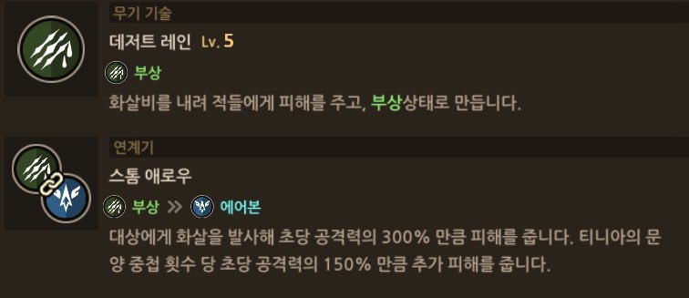
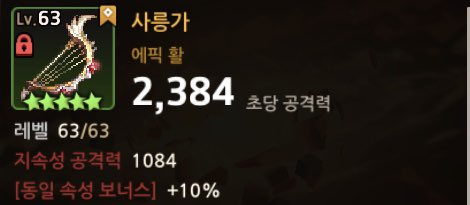

영웅들은 우리가 조종할 수 있는 캐릭터들이라고 할 수 있지. 대부분 뽑기를 통해 얻지만 스토리를 깨면서 얻을 수 도 있어 !!
영웅들도 다 각자의 역할이 있어.
이렇게 영웅의 역할이 대부분 정해져 있어서 팀을 짤 때는 일반적으로 1탱+2원딜+1서포터로 구성해.
영웅들은 무기에 따라 스킬이 달라져. 그런데 이 무기스킬에 따라서 상대방은 3종류에 cc기(이동방해상태)를 가지지.
이렇게 영웅들의 스킬로 몬스터에게 cc기를 넣을 수 있어. 보스몹은 2번 스킬 써야 cc기에 걸리고. 그리고 이렇게 cc상태의 몬스터에게는 연계기를 슬 수 있어.
 예를들어 티니아를 보면 연계기가 스톰에로우야. 스톰에로우는 부상상태인 적에게 쓸 수 있고, 연계기를 통해 에어본 상태로 만들 수 있는거야. 상대가 에어본 상태가 되면 에어본 상태인 적을 연계기로 공격할 수 있는 팀원이 있으면 연계기를 한번 더 쓸 수 있겠지 ?? 그렇기 때문에 팀원들의 연계기나 스킬을 보고 팀을 잘 조합해야돼.
그리고 하나 팁을 주면 티니아의 전무는 사릉가인데 사릉가는 스킬이 상대방을 부상상태로 만드는거야. 그러면 연계기를 쓰기 쉬워지겠지 ?? 만약 사릉가가 부상이 아니라 다운 효과가 있었다면 티니아는 혼자서는 연계기를 못쓰는거지. 그래서 전무들은 각 캐릭터의 연계기에 맞는 cc기를 가지고있어. 이게 전무가 중요한 이유중에 하나야.
여담으로 마리나는 모든 cc기에 연계기를 사용할 수 있어 ㅎㅎ
각 영웅은 각자만의 속성이 있어. 속성은 크게 불,물,지속성과 광,암,무속성으로 나눌 수 있지. 그리고 각 속성마다 상성이 있고 !

속성이 유리할 수록 상대방에게 +30%의 피해를 더 줄 수 있어. 반대로 속성이 불리하다면 공격력이 -30%가 돼. 그런데 여기서 주의할 점은 내가 공격을 받을때는 내 속성대로 맞지만 공격을 할때는 무기의 속성에 따라 공격이 나가.
무기들에는 다 속성 공격력이 나와있어. 사릉가 같은경우에는 지속성 공격력이 붙어있네. 즉 물속성 캐릭터가 사릉가를 끼면 공격 속성은 지속성이 되는는거야. 예를들어 물속성 캐릭터로 지속성 캐릭터를 상대할 때는 맞는것도 아프게 맞고, 떄릴때도 약하게 때리게 되지만 화속성 무기를 들고 상대하면 아프게 맞는건 어쩔 수 없더라도 아프게 때릴수는 있다는 말이지 ! 그렇지만 속성에 맞게 무기를 껴주는게 가장좋긴해. 왜냐하면 사릉가보면 [동일 속성 보너스]가 있잖아. 동일 속성인 캐릭터가 낀다면 공격력이 10% 더 증가한다는거지. 그렇기 때문에 무기는 속성에 맞춰끼는게 좋긴하다 !